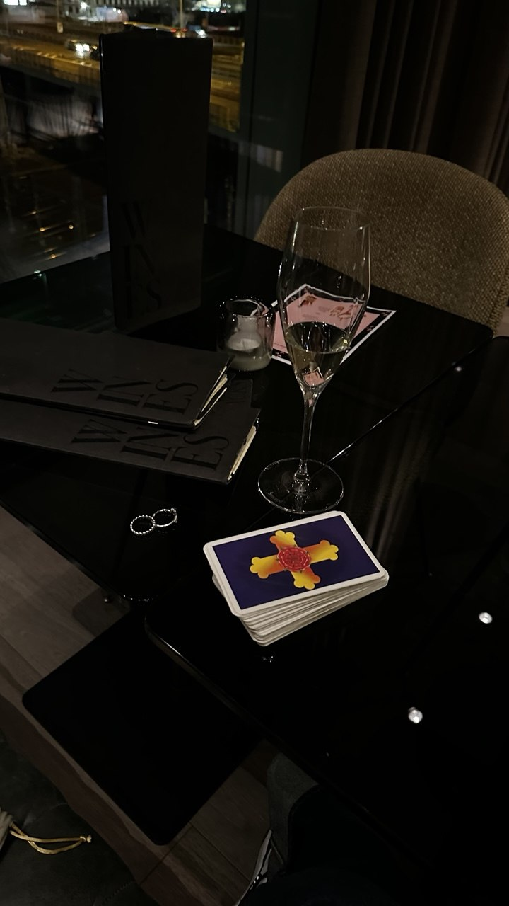

Глава 01
Мой путь начался с внимательного чтения карт
Я начала с глубокого изучения Таро и постепенно выстроила собственный подход к чтению карт. Для меня важно не выдавать готовый приговор, а спокойно разобрать связи, влияния и варианты дальнейших действий.
Каждый запрос я рассматриваю индивидуально: сначала слушаю человека, затем выбираю подходящий формат и только после этого перехожу к работе.
